Мы переезжаем! Новый адрес — ул. Игнатенко, 5
Дорогие друзья, мы переезжаем в другое пространство! Теперь к нам добираться будет проще. В ближайшую пятницу киноклуба ещё не будет — наводим порядок. Ждём вас по новому адресу: г. Ялта, ул. Игнатенко, 5. Все подробности — в канале и ВКонтакте. И напоминаем: 5 апреля в воскресенье в 18:00 в галерее «Стикс» состоится спектакль «УЖЕ» от Мимлы Же.
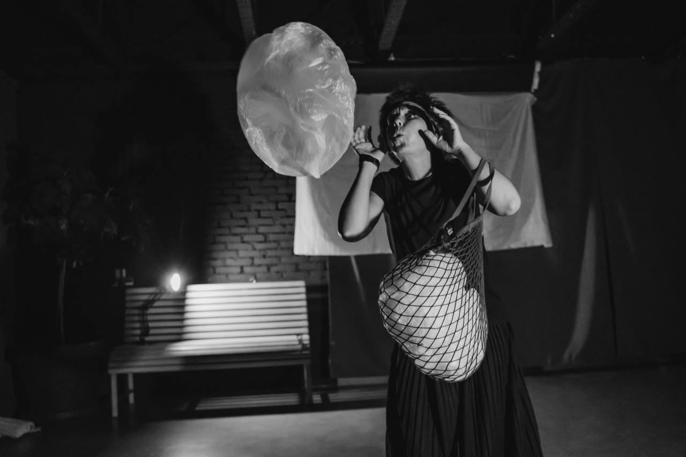
Спектакль «УЖЕ» — Мимла Же, 5 апреля
Авторская экспериментальная постановка поэтессы и художницы Мимлы Же. Четыре стихотворные сказки: Муха в обстоятельствах, Авоська и Пакет о целях жизни, Русалка в поисках себя, Королевская чета в поисках счастья. Элементы декораций и костюмов из переработанного пластика. Музыка — Евгений Аникин. 12+

«Тёмная энергия и тёмная материя» — лекция прошла на ура
Замечательно прошла встреча с Сергеем Назаровым — учёным, сотрудником Крымской астрофизической обсерватории. Гости ознакомились с темой тёмной энергии и тёмной материи. Благодарим Сергея за увлекательную лекцию, доступную для понимания. Получили предложения для организации новых встреч — у Сергея есть целый список тем.
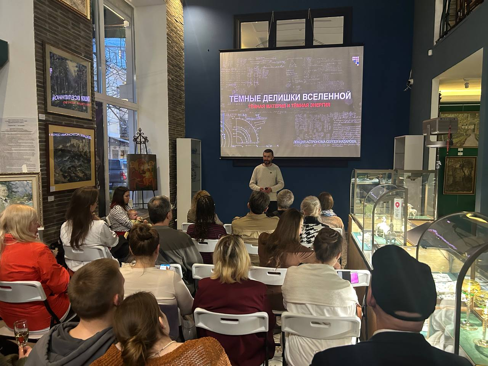
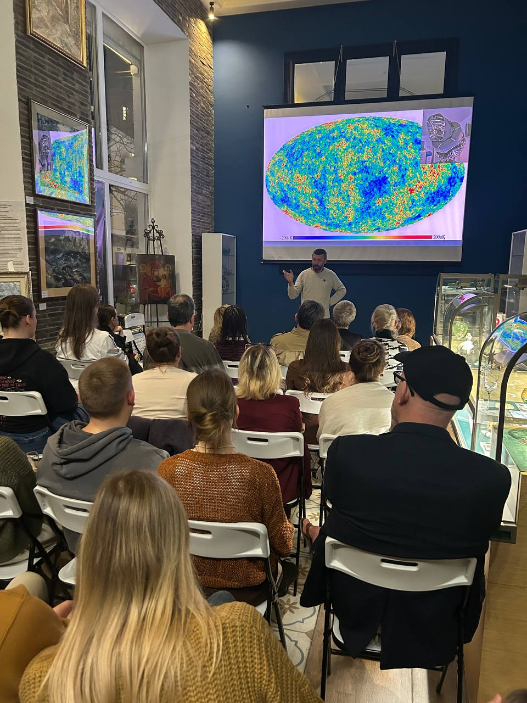
Международный день театра — студенты Школы киноискусства
Поздравляем с Международным Днём Театра! На фото студенты Школы киноискусства «Киммерия», курс актёрского мастерства, взрослая группа. Желаем творчества и неисчерпаемого вдохновения!
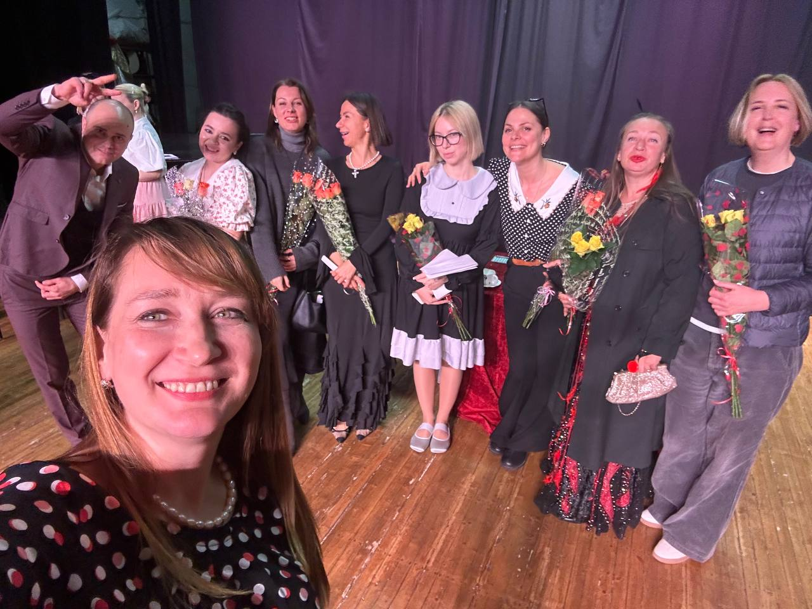
Вечер памяти Говорухина — встреча с легендами в «Сатурне»
В кинотеатре «Сатурн» собрались те, для кого кинематограф — это больше чем профессия. 90 лет со дня рождения Станислава Говорухина и 37 лет культовой «АССЕ». Воспоминаниями поделились звукорежиссёр Михаил Резниченко, художник по гриму Светлана Молодец, каскадёр Альберт Фёдоров, актриса Тамара Жемчугова-Бутырская. Особое событие — презентация документального фильма «АССА-2024» режиссёра Дмитрия Смирнова.
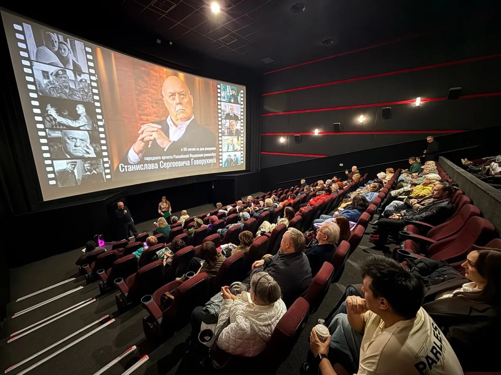
Впервые в Ялте: лекция «Тёмная энергия и тёмная материя»
28 марта в 19:00 — уникальная встреча с Сергеем Назаровым, научным сотрудником Крымской астрофизической обсерватории. Один из лучших лекторов России расскажет о тёмной материи и тёмной энергии «по косточкам». Галерея «Стикс», ул. Игнатенко, 10. Энергообмен 1000 ₽.
Открытие выставки крымского художника Сергея Бакаева в Москве
В Москве в галерее «Стикс» открылась выставка «Моей души огнём прошитый след…», посвящённая творчеству крымского художника Сергея Бакаева. Более 70 живописных работ и личные архивные материалы. На открытии присутствовал лётчик-космонавт РФ, Герой России Андрей Борисенко. Для посещения: +7 915 157 7070.
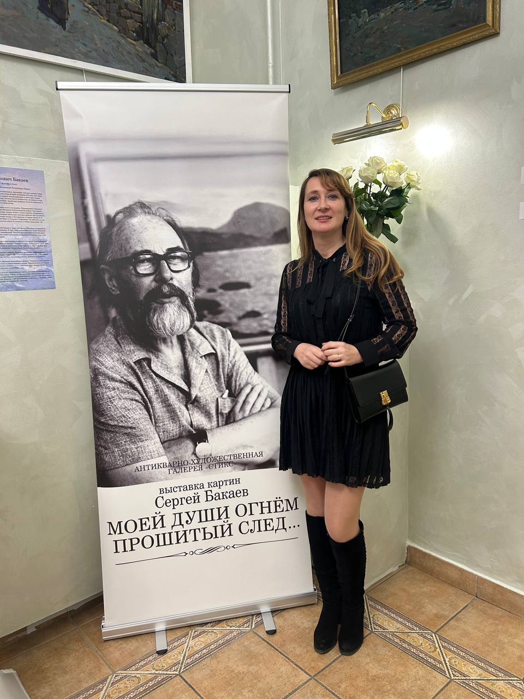
Открытие выставки «Румяный русский плод и южный виноград»
В Алупкинском дворцово-парковом музее-заповеднике открылась выставка, посвящённая фарфору, керамике и стеклу XVIII–XX веков. Видеосюжет снят кинокомпанией «Киммерия». Экспонаты предоставила галерея «Стикс». Выставка открыта до 14 июня 2026 г.
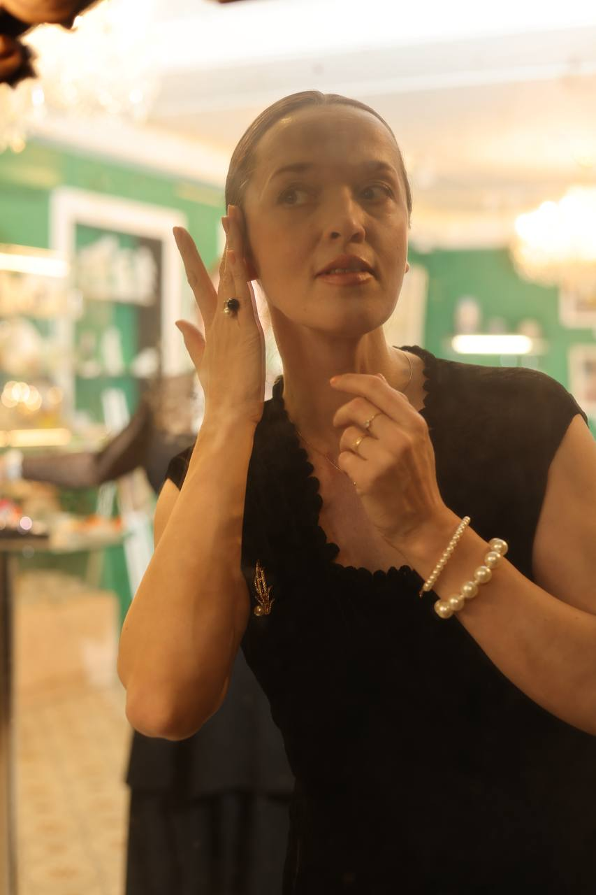
Пина Бауш, танцтеатр и «Весна священная»
В субботу в Киммерии-АРТ прошла лекция про хореографа Пину Бауш, посмотрели балет «Весна священная» и узнали про танцтеатр. Мария Отрада провела конструктивную беседу про современную хореографию — было очень интересно и познавательно! Очень рады, что в нашем пространстве появляются новые люди, с которыми интересно узнавать наш Мир с разных граней.
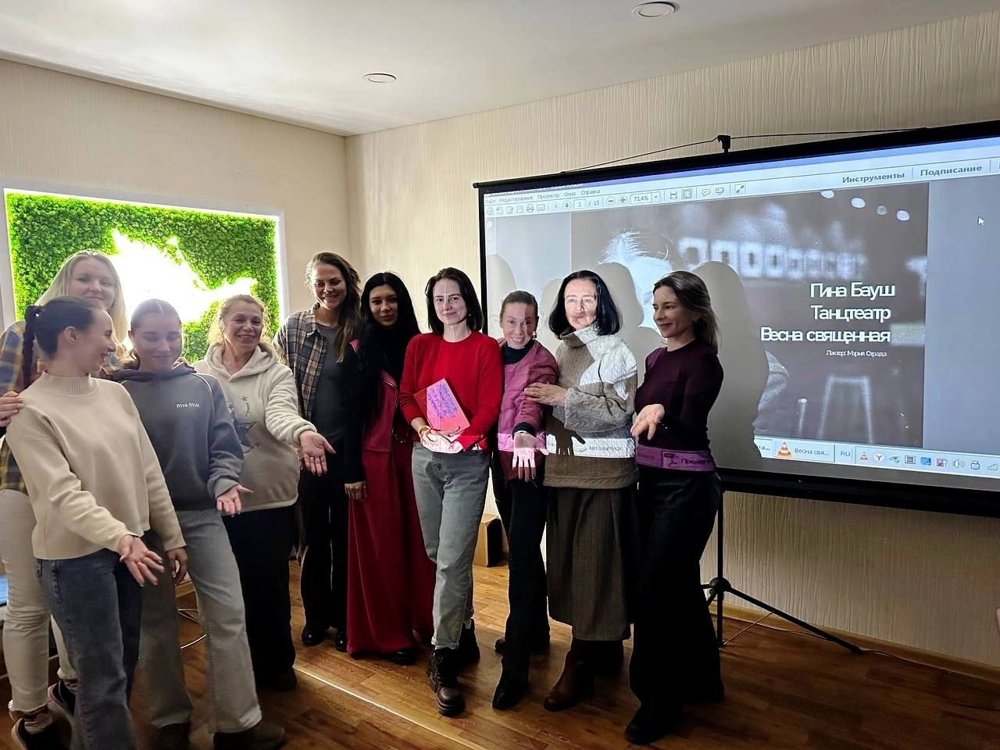
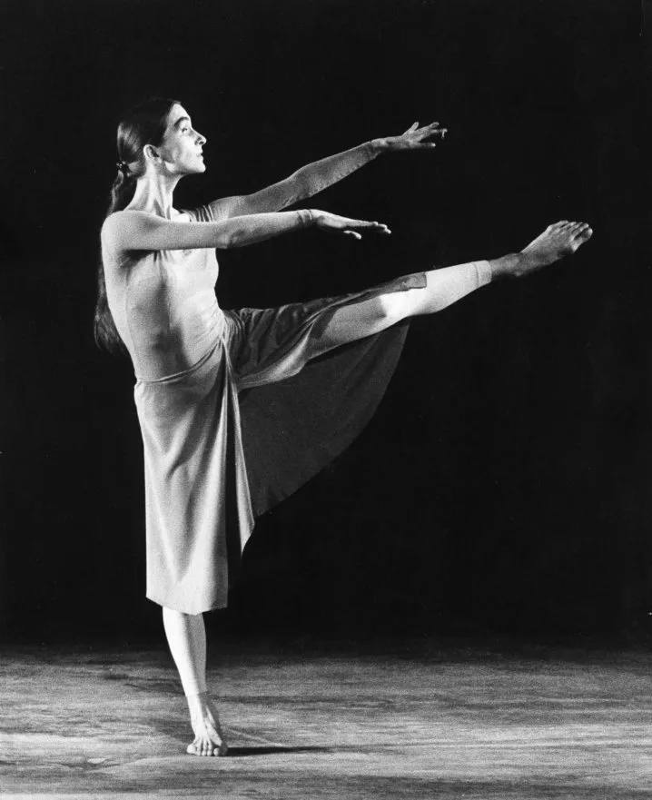
Питер Гринуэй — игры разума и хаоса
Фильмы Питера Гринуэя строятся вокруг игр, чисел и списков, но получаются величественными и гипнотизирующими. Фильм «Утопая в цифрах» требует анализа и разбора по символике, мифологии и психоанализу. Благодарим Наталию Добрынскую за предложение посмотреть фильм. Думаем, мы ещё не раз вернёмся к кинематографическому языку Гринуэя.

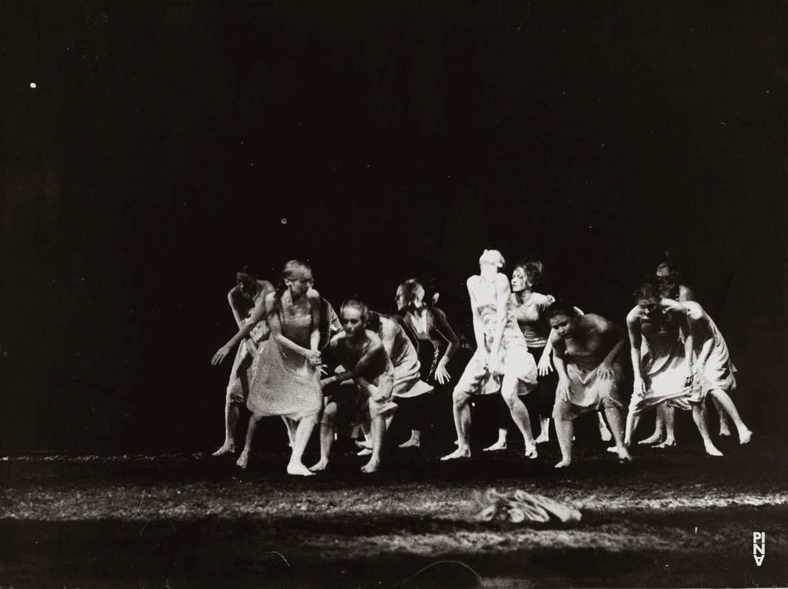
«Анора» — свободных мест не было
В пятницу смотрели фильм «Анора» режиссёра Шона Бейкера. Фильм нашумевший, поэтому вдвойне хотелось разобраться в причинах такого ажиотажа. Спасибо Стефании Джой за предложение посмотреть фильм и поднять интересующие нас всех темы. Свободных мест не было! Несмотря на то что обсуждение было достаточно бурным и информативным, осталось ощущение недосказанности — мысли о фильме не отпускали ещё несколько дней. Неоднозначный фильм, но точно не поверхностный.
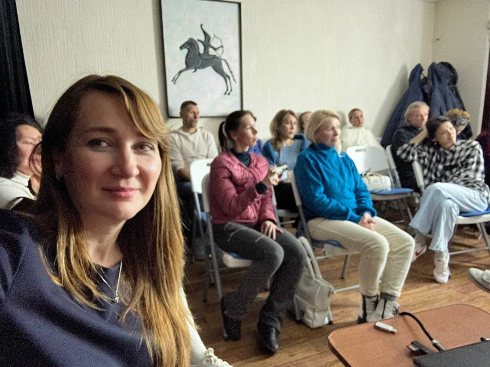
Висконти, смерть и красота — «Семейный портрет в интерьере»
Какой красивый фильм мы смотрели в пятницу! «Семейный портрет в интерьере» 1974 года. Благодарим Ольгу Дарфи за интересный рассказ о фильме и его создателях. Психологическая драма, через которую автор тонко провёл осмысление жизни. Фильм многослойный, наполнен символами, хочется пересматривать и находить новое прочтение. Лукино Висконти снял фильм за полтора года до собственной смерти. Поднимались темы науки, искусства, безусловной любви и смены эпох.
«Наука сна» — ПСС: Параллельная Синхронизация Случайностей
Благодарим Екатерину Сорокину за непринуждённый рассказ о режиссёре Мишеле Гондри и знакомство с его первыми работами — музыкальными клипами неординарной певицы Бьорк. ПСС — Параллельная Синхронизация Случайностей. Мне кажется, мы живём в этом. Какие прекрасные люди к нам приходят в киноклуб! Все такие разные, но такие интересные.
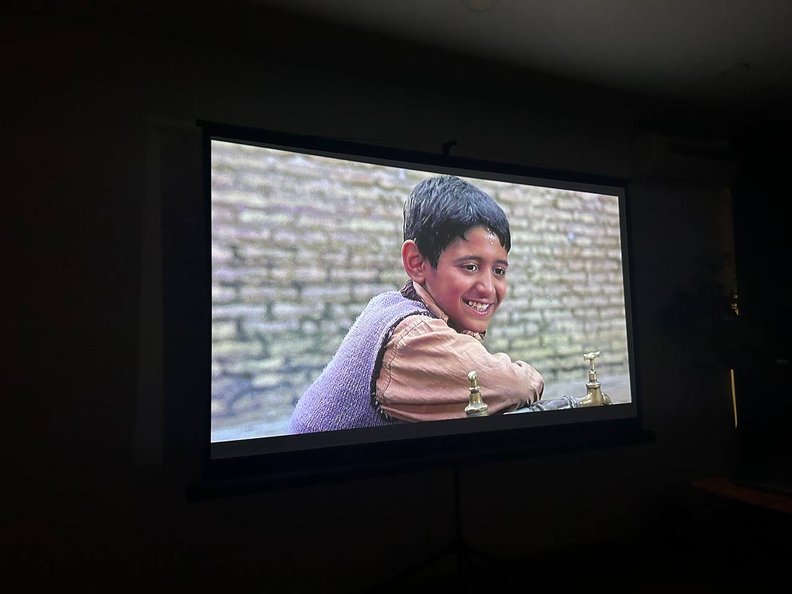
Новый год открываем иранским кинематографом
Дорогие друзья! Приветствуем вас в Новом году и очень ждём в нашем киноклубе каждую пятницу! Открываем год знакомством с иранским кинематографом — приглашаем 17 января в 19:00 на кинопросмотр с обсуждением фильма «Дети небес» (1997) режиссёра Маджида Маджиди. Первый иранский фильм, номинированный на «Оскар». Представит фильм музыкант и путешественник Михаил из Иркутска.

«Субстанция» — самый отвратительный и великолепный фильм года
В прошлую пятницу смотрели «Субстанцию» с Алисой Селецкой. Боди-хоррор — необычный жанр для нашего киноклуба, но фильм затрагивает более глубокие вопросы. При обсуждении всплывают разные точки зрения и формы восприятия. Всё больше убеждаемся в том, что живое общение обогащает нас, умение слышать и уважать собеседника делает нас самих более гармоничными с окружающим Миром.
«Субстанция» — 6 декабря: самый нашумевший фильм 2024
«Вы когда-нибудь мечтали о лучшей версии себя?» Кино французской режиссёра Каролин Фаржа получило 90% на Rotten Tomatoes и престижную награду в Каннах. В премьере аплодировали 13 минут подряд. Боди-хоррор, который будет жёстко говорить с нами о невероятно актуальных болезнях нашего времени: конфликт желаемого и действительного, безумная гонка за недостижимыми идеалами общества.

«Королевство зверей» — что нас делает Человеком?
Благодарим Стефанию Джой за выбор фильма и за поднятые темы: гуманизм, сострадание, безусловная любовь. Что нас делает Человеком? И зачем? Спасибо всем присутствующим за активное участие в обсуждении, доброжелательную атмосферу и умение слышать собеседника.
Бесплатные мастер-классы Школы киноискусства
Завтра в субботу 19 октября пройдут бесплатные мастер-классы в Школе киноискусства «Киммерия». Расписание: 11:00 — Основы публичных выступлений (Наталия Добрынская); 13:00 — Видеопроизводство и операторское искусство (Игорь Гордиенко); 15:00 — Режиссура (Антон Ярош); 17:00 — Артист разговорного жанра: стендап комик (Юрий Софин); 19:00 — Экспериментальное кино. Теория и история современного искусства (Владимир Могилевский).
«Королевство зверей» — что в нас от Бога? Что от зверя?
Фильм Тома Кайе 2023 года — настоящая шкатулка с секретами. Когда спрашиваешь у посмотревших, о чём этот фильм, каждый отвечает по-своему. Приглашаем вместе со Стефанией Джой посмотреть и поразмышлять о природе человека, его месте в мире. Фантастика, антиутопия, боди-хоррор — но в центре сюжета драма одной семьи. Ксенофобия, сегрегация, страх по отношению к «другим», вопросы экологии. И всё это — на фоне великолепных натуральных съёмок лесных пейзажей.
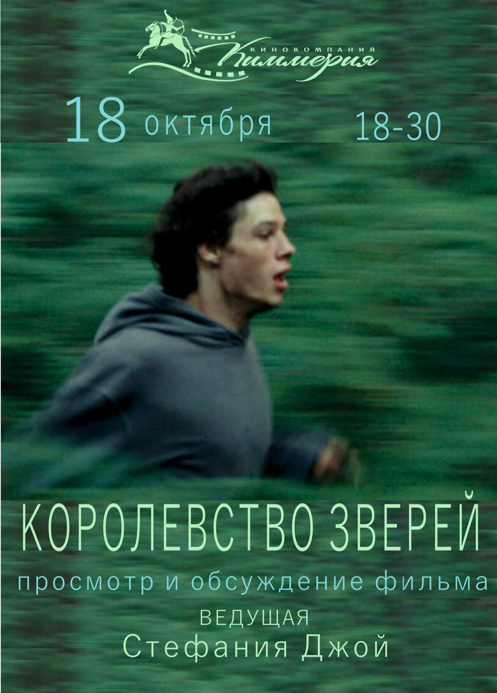